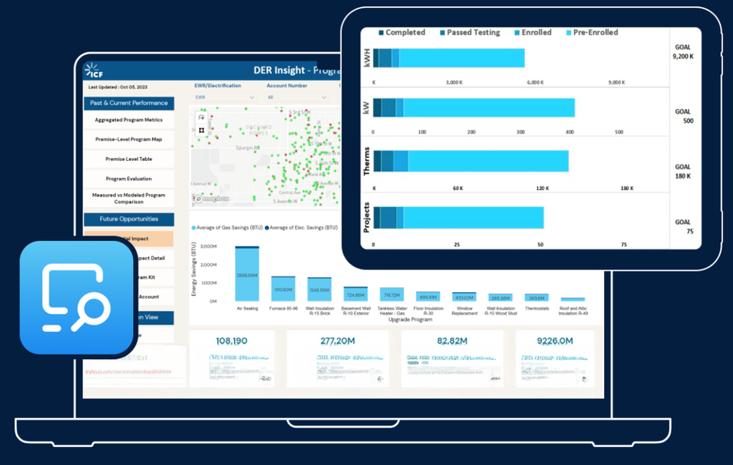

A planning and analytics platform that helps electric utilities decide where and how to use distributed energy resources, built to replace a one-off spreadsheet process with a repeatable one.

DER Insight's program dashboard, as shown in the analytics module of ICF's SightLine page. Image from ICF's website.
My role
Core developer from the first build, later technical lead
Years
2019–2023
Team
Two co-developers and a cloud architect at the start; up to six developers across four modules
Built with
R, Power BI, Azure, AWS
The problem
Utilities that want to defer a substation upgrade with customer programs, batteries or flexible load need to know which resources would work, what they would cost, and how many customers would sign up. The analysis was done by hand, in spreadsheets, one substation at a time. Each new study started close to zero.
What I built
I helped turn that process into one connected set of models, with thousands of lines of code across more than eight modules. A repeat analysis on a new substation took a fraction of the time of the first.
Non-wires alternativesBuilding energy models, load-shape calibration and customer participation for substation-level deferral studies.
Program optimizerDesigns flexible-load programs and compares portfolios of resources.
Benefit estimationOne consistent way to estimate the benefits of a program.
Savings evaluationVerifies savings from metered energy use.
Load forecastingTime-series machine learning for system and substation load, including a System Planning MVP.
Dispatch automationResearch toward automating program calls through utility control systems.
I also built the Power BI decision tool that sits on top of the models, and an anonymized demo that ICF used in sales presentations.
My contribution
Wrote the non-wires-alternative cost-effectiveness models for studies across several substations at two Midwest utilities.
Led the System Planning MVP, coordinating three technologists to forecast managed and unmanaged load growth at the substation level.
Covered a lead collaborator's module development during parental leave, coordinating six developers across four modules.
Interviewed, hired and trained new team members in R, Python and Azure.
Outcome
Named Innovative Product of the Year for 2023 in ICF's Energy, Environment, and Infrastructure group.
Repeat studies for new substations ran much faster than the first.
Led to follow-on work with the same utilities and to new utility clients.